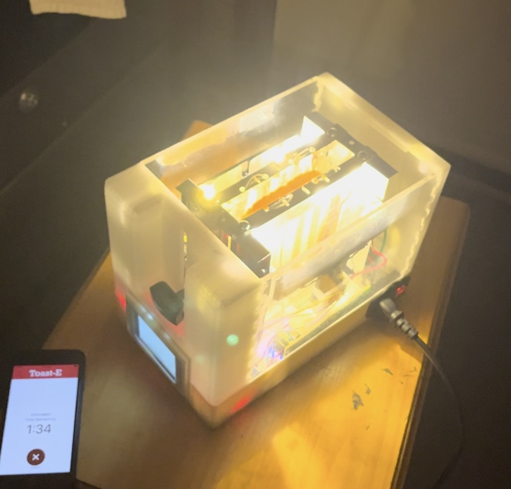
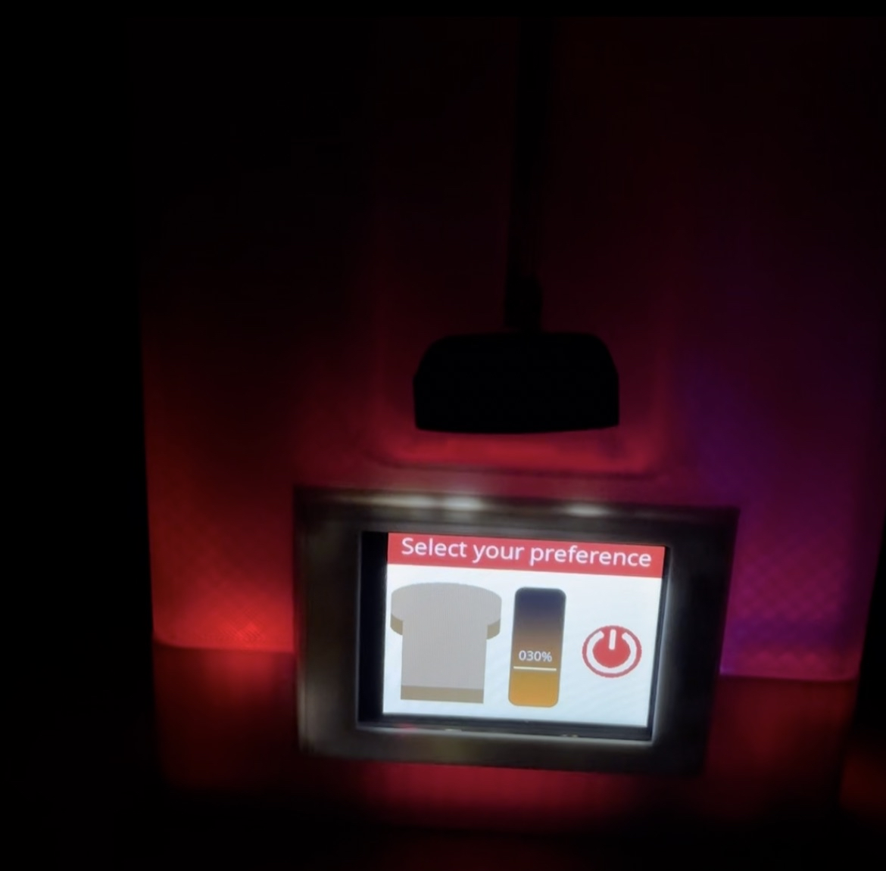
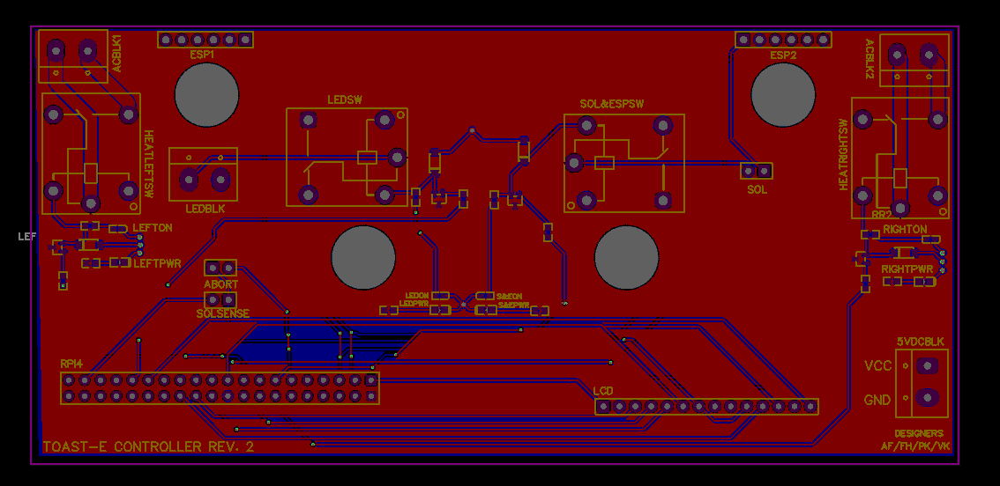
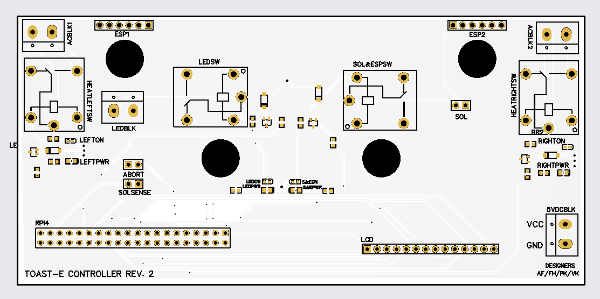
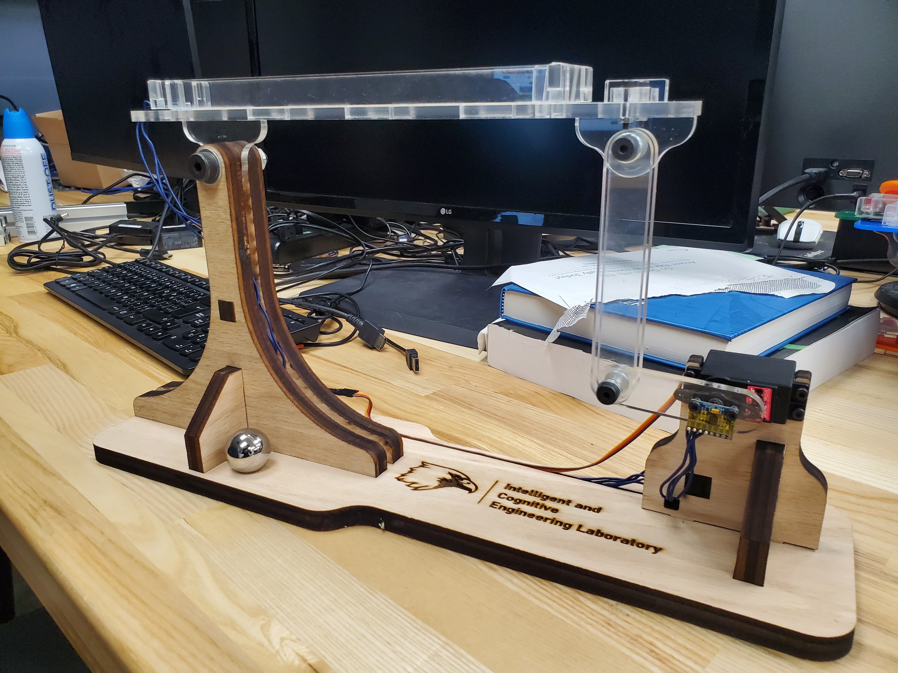
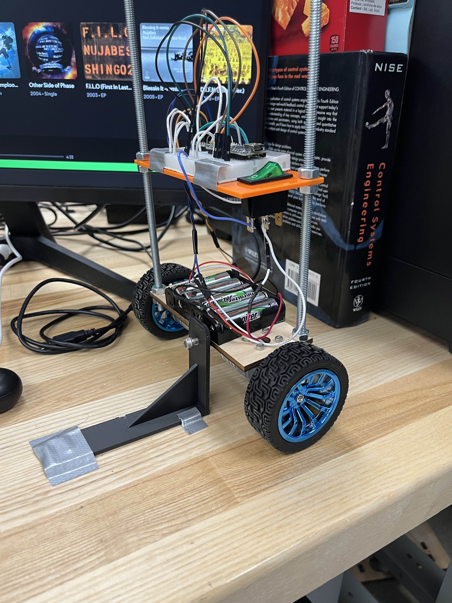
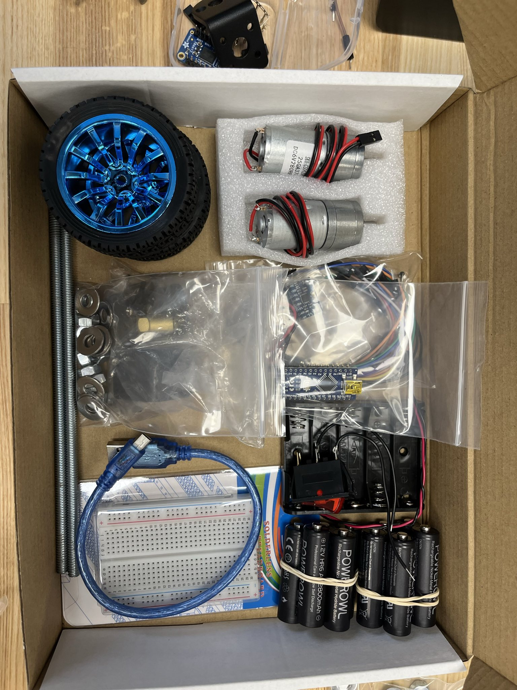
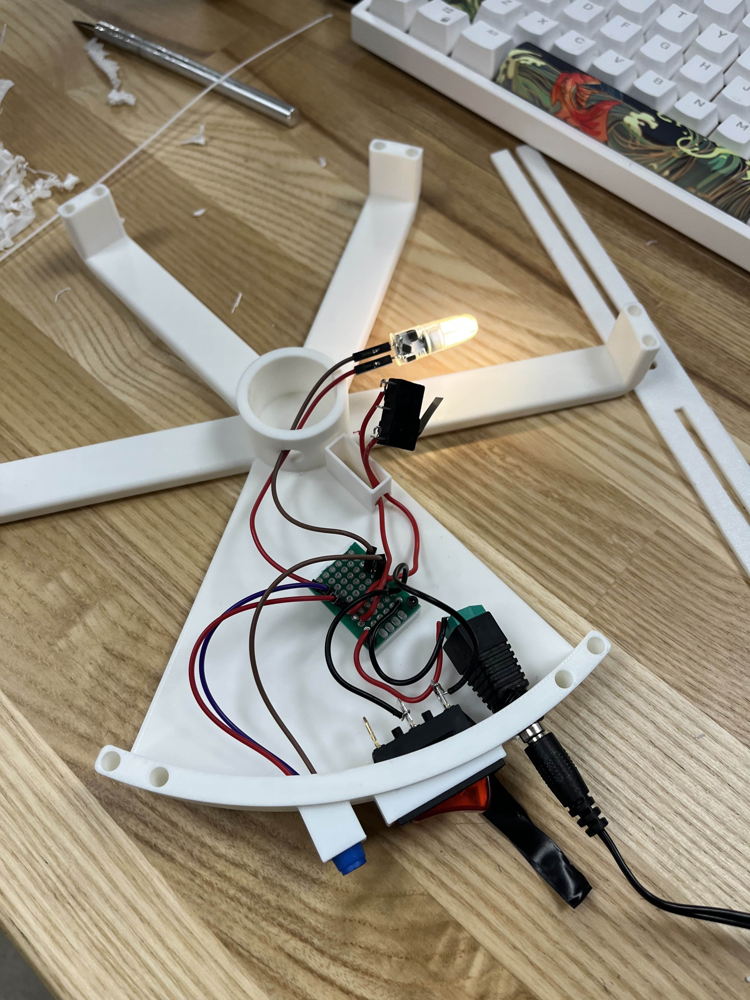

MASc Research · Systems Integration, Control, Estimation
This project was done as part of my MASc degree requirements. The purpose of this robot arm is to serve as an experimental setup for developing control and estimation algorithms. This is a retro-fitted UR5 with all custom joint electronics, shaft couplings, and mounting plates. The arm was built from scratch with the help of three other graduate students.
My capstone project was an AI powered smart toaster running a closed loop controller for user selected crispiness level. This project was done with three other students.




Control script written in Python running on a Raspberry Pi 4
Images captured every 15 seconds and put through a pre-trained CNN to determine crispiness of the toast
User selects crispiness level based on a touch screen LCD where a spectrum of levels is given (we also created an app)
Custom PCB housing a relay circuit for heating element control
Entire toaster was built from scratch using sheet metal, glass, nichrome wire, and 3D printed components
My primary focus was writing the control loop, creating and training the CNN, developing the PCB, and assembly of the toaster
PythonC++Raspberry PiESP32PyTorchPCB Design
Ball & Beam Robotic Setup2023
ICE Lab USRA · Primary Developer
As a robotics research assistant at the ICE lab I was tasked to create 10 ball and beam robotic systems as project kits for the MECHENG 4SS3: Smart Systems course.

Designed and built a ball and beam robotic system from scratch
Created a detailed CAD model of the setup
Wrote an Arduino C++ program including data collection from a soft potentiometer, writing to a servo motor, and determining joint angles with a PID controller
Created MATLAB simulations for dynamics and control validation
Laser cut and 3D printed components
Scaled to 11 setups, storing in kits for students to assemble
The ball and beam robotic setups were successfully used by over 50 students as their course project (used for two years)
Arduino C++PID ControlCADMATLAB3D Printing
Self-Balancing Robot2024
ICE Lab USRA · Technical Mentor, Manufacturing
During my graduate studies I supported an undergraduate student researcher with the development of a self-balancing robot used as a project kit for MECHENG 4SS3: Smart Systems course.


Gave design feedback and assisted with debugging efforts (NOT PRIMARY DEVELOPER)
Assisted in Arduino C++ program development for control and tuned a PID controller for balancing
Manufactured 6 setups
The self balancing robot setup was successfully used for one year of the course
The Hobberman lamp is a retractable lamp taking advantage of a 3D printed Hoberman mechanism with variable dimming. The device was made for a rapid prototyping course project with two other students.

Designed structure of the lamp including the base and sliding mechanism
Used reference design of Hobberman sphere and made modifications to linkages and connectors
3D printed and assembled structure
Created the light circuit including a potentiometer, main power switch, limit switch at fully closed position